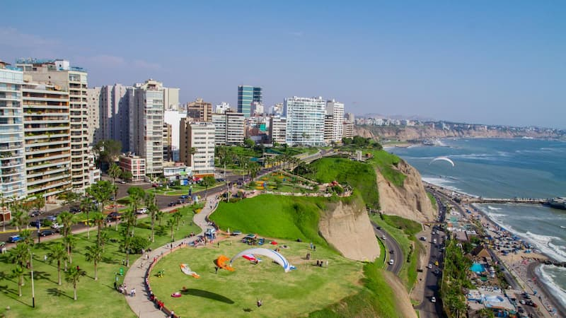

Percy Yarleque
About Me
My name is Percy Yarleque. I live in Lima, Peru, and I am passionate about technology and continuous learning. I enjoy web development, programming, and solving creative challenges. I love learning new skills, sharing knowledge, and exploring how technology can improve people's lives.
Lima, Peru

This is a beautiful view of Lima, showing its skyline and coastal area.
Lima is the capital of Peru and a vibrant city located on the Pacific coast. It is known for its history, colonial architecture, and world-famous gastronomy. Some of its main attractions include the Historic Center, the Park of Love, and the Magic Water Circuit.